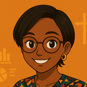

I'm a PhD student in Engineering in Data Science at Cleveland State University, with a background in statistics, teaching, and official statistics work in Gabon and South Africa. Here is the work I've done and how I approach a problem.
A foundation built on resilience, precision and collaboration.
Grew through rejections, new countries and new systems with intention and consistency.
Analytical depth and clear thinking rooted in mathematical and statistical training.
I've taught more than 200 undergraduates, tutored students in mathematics and statistics, and mentored high school students.
Selected statistics and data science projects from my graduate work. Click a project for the full story. Code and documentation are on GitHub.
Teaching, analysis, and official statistics work across Gabon, South Africa, and the United States.
A one minute ride through the stops that shaped me.
Mechanical engineering

Hi, I'm Keesha! Welcome to my story. Tap a stop to ride along.
Eight stops, three countries, one goal: make data useful. Thanks for riding along.
Collected along the way
I'm open to research assistantships, collaborations, and conversations about data science and statistics.
Based in Cleveland, Ohio, USA
Open to remote opportunities and relocation